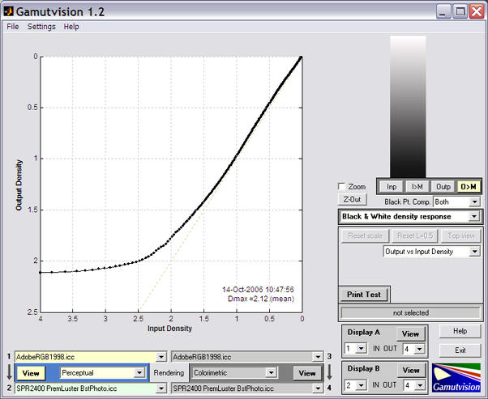
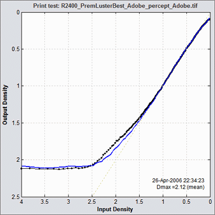
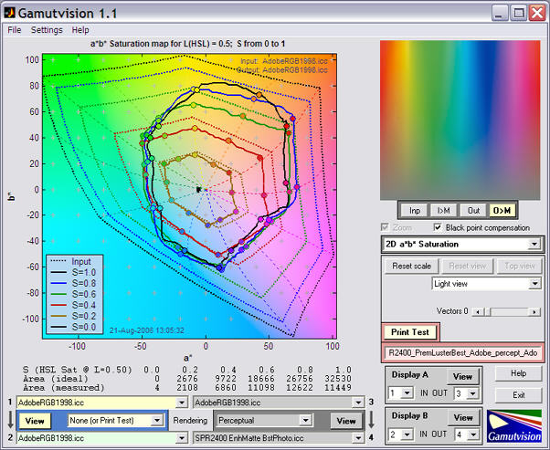

Gamutvision™ is a gamut viewer and much more: it is a powerful tool for learning color management, exploring its operations, and proofing color workflows.
What can you do with Gamutvision?
- Visualize color gamuts, gamut mappings, and rendering intents.
- Evaluate ICC profile quality.
- Analyze printer, paper, and photo lab performance using downloaded profiles.
- Analyze the performance of your printer using scanned test prints or round trip mappings.
- See precisely how an image will change when printed.
 |
The image on the left is a typical Gamutvision display: a 3D L*a*b* representation of the color gamuts of
- the Adobe RGB (1998) color space (outer wire frame), and
- an Epson R2400 print made on Premium Luster paper set to best quality, mapped from Adobe RGB with colorimetric rendering intent (inner solid). Results derived from Epson's ICC profile (an X-rite "premium" profile, released around October 2005; different from earlier profiles supplied with the R2400).
This is one of several Gamutvision displays. It can be rotated and zoomed. Gamut volumes, which are the single numbers that best characterize gamut size, are optionally displayed on the lower-right.
Gamutvision uses ICCTrans, the Matlab interface to the LittleCMS color management system. The ICCTrans file is worth downloading for the excellent manual. Many thanks to Ignacio Ruiz de Conejo and Marti Maria (of Hewlett-Packard Spain) for their outstanding work.
|
Gamutvision structure
 |
You can select up to four ICC profiles (files that characterize device color or color spaces): two input profiles (1 and 3) and two output profiles (2 and 4). The full gamuts of the input profiles are always calculated. The gamut response of the output profiles after mapping are calculated unless Rendering intent is set to None. You can view gamuts using numerous options.
- You can view input and corresponding output gamuts simultaneously.
- You can view any two gamuts simultaneously using Displays A and B.
- You can rapidly switch between views using the four View buttons.
Gamutvision's structure is shown in more detail in Using Gamutvision. Its displays are summarized in the table below.
|
Color management is the science (or perhaps the art) of transforming images between files and devices with different color gamuts— ranges of reproducible colors. And every device has its own unique gamut. The transformations are called gamut mappings; they are performed by a color engine (or color management system) under control of files called ICC profiles with one of four user-selected rendering intents. The definitions of rendering intent can be maddeningly vague— especially perceptual intent, which is often recommended for photographers.
It's far from obvious which intent is best for a given application. For printer profiles, rendering intent behavior is built into each ICC profile; it depends on the manufacturer of the profiling software. The results may bear little resemblance to the textbook descriptions. This contributes to the frustration experienced by students and practitioners of color management. With Gamutvision you can cut through the fog. |
Example
The images below illustrate the gamut, color, and tonal response of the Epson R2400 printer with Premium Luster paper, "best" profile, and perceptual rendering intent for an image in Adobe RGB (1998) color space. Results derived from the ICC profile are compared with results from a scanned test print. Images have been reduced.
The selected input and output color spaces, rendering intent, and View are highlighted. Explanatory tooltips appear when the cursor is moved over buttons or controls.
The large image on the left contains a 2D a*b* saturation plot of the input gamut (dashed line) and mapped output gamut (solid line), for HSL Saturations S = {0.2, 0.4, 0.6, 0.8, 1.0} at L(HSL) = 0.5 (where colors achieve their maximum saturation). Additional displays, such as the 3D L*a*b* gamut plot shown near the top of this page, are selectable from the box on the right that says 2D a*b* Saturation (L(HSL)=0.5). They are summarized in the table below and described in Using Gamutvision Part 2: Displays .
The smaller image on the upper-right contains the input or output test image. The output mapped to the monitor display color space, which is typically similar to sRGB, is displayed above. You can use this image to compare the gamuts of the original and the transformed images. This window has four view options.
| Inp |
|
Input image (original) with no mapping. |
| I>M |
|
Input image mapped to the monitor color space (which defaults to sRGB, but can be set to any monitor profile). |
| Out |
|
Output image (original) with no mapping.This image may look strange for printer profiles because it contains the bits sent to the printer, which can have a highly nonlinear relationship to the printed image. |
| O>M |
|
Output image mapped to the monitor color space. |
The above plot shows the gamut for the Adobe RGB (1998) color space (the input profile; dashed lines) mapped with Perceptual rendering intent to SPR2400 PremLuster BstPhoto.icc (Epson 2400, Premium Luster, best quality; the output profile; solid lines). The gamut achieved when mapping from Adobe RGB is somewhat smaller than the full printer gamut.
Despite the R2400's evident weakness in the greens, blues, and magentas, it is state-of-the-art for pigment-based printers in 2006. A comparison with the Epson 2200 (the previous printer generation) shows little change in color gamut— reds are slightly improved , though Dmax (the maximum printable density) = 2.12 has improved by about 0.13 (an excellent number; a modest improvement). The grayscale plot is shown below. Dmax tends to be lower for matte surfaces: typically 1.5 to 1.8.

Now here's where it gets interesting. Gamutvision allows you to analyze a scanned test print, using the Print Test function, which is derived from Imatest Print Test, but takes advantage of Gamutvision's versatile output. Print Test operates as follows.
- Print the test pattern, noting (as applicable) the printer, paper, ink, working color space (Adobe RGB (1998) recommended), ICC profile, rendering intent, color engine, and miscellaneous software settings.
- Scan it on a flatbed scanner, preferably one that has been profiled. Auto-exposure must be disabled. Best results are obtained by scanning it next to a step chart such as the Kodak Q-13.
- Run Gamutvision Print test by clicking on Print test.
The grayscale plot is shown on the right. The black and blue curves are for the two grayscales in different parts of the test chart. Some useful information about the shape of the B&W density response curve can be found in Black point compensation. |
 |
Full instructions can be found in Gamutvision Print Test. The grayscale density response is for the Epson R2400, Premium Luster paper, best quality. Here is the Print Test saturation map.

The Print Test results are remarkably similar to the results derived from the profile, though saturation is somewhat lower. The features of the output figure are notably similar, for example, the slight vertical ridge in the saturated greens. This illustrates one of the most important capabilities of Gamutvision: predicting printer performance from ICC profiles, many of which are available for downloading.
Display summary
More detail can be found in Using Gamutvision Part 2: Displays.
| Display |
|
Display |
|
3D L*a*b* (wire input, solid output) (S ≤ 1)
A 3D plot in L*a*b* space showing the input gamut as a wire frame and the output gamut as a solid. May be rotated or zoomed. Vectors and gamut volumes can be displayed. Lighting can be turned on to highlight the gamut surface. S has a default value of 1, but can be set to any value between 0 and 1.
|
 |
2D a*b* Gamut (S = 1)
2D Gamut map on the a*b* plane. Shows the input and output gamut for the S=1 (maximum saturation) pattern for L = [0.1, 0.3, 0.5, 0.7, 0.9]. |
 |
| 3D L*a*b* Reversed (wire output) (S ≤ 1) |
2D a*b* Saturation (L(HSL) constant)
Shows the input and output gamut response for saturation levels S = [0, 0.2, 0.4, 0.6, 0.8, 1] for fixed values of L(HSL). L has a default value of 0.5 (where colors are the most saturated), but can be set to any value between 0.05 and 0.95. This is an excellent representation of a printer's color response. |
 |
D a*b* Color difference (L(HSL) constant)
Shows the perceptual difference between the input and output gamuts at saturation levels S = [0, 0.2, 0.4, 0.6, 0.8, 1] using fixed values of L(HSL) between 0.05 and 0.95 (default = 0.5). Metrics include ΔE*ab, ΔC*ab, ΔE*94, ΔC*94, ΔE*CMC, ΔC*CMC, ΔL*, ΔChroma, ΔHue angle, and Δ|Hue distance|. |
 |
3D/2D HL Color difference (S ≤ 1)
Detailed 3D or 2D plots of the perceptual differences between the input and output gamut boundaries (saturation S = 1), with the option of reducing S to display the interior of the gamut volume. Metrics include ΔE*ab, ΔC*ab, ΔE*94, ΔC*94, ΔE*CMC, ΔC*CMC, ΔL*, ΔChroma, ΔHue angle, and Δ|Hue distance|. Input and output Lightness (L*) and Chroma (c*) can also be displayed. |
 |
xy Chromaticity (L(HSL)=0.5)
CIE 1931 xy Chromaticity pattern. L(HSL)=0.5 pattern. Shown with gamuts for S = [0, 0.2, 0.4, 0.6, 0.8, 1]. Familiar but not perceptually uniform: greens are greatly exaggerated.
|
 |
u'v' Chromaticity (L(HSL)=0.5)
CIE 1976 y=u'v' Chromaticity pattern. L(HSL)=0.5 pattern. More perceptually uniform than the CIE 1931 xy diagram, but still not perfect.
|
 |
2D HSL contour plots
2D plot showing values of H, S, or L(HSL) or differences between input and output H, S, and L(HSL) values. Uses either L(HSL)=0.5 or S=1 patterns. The a*b* and HL color differences (above) are preferred because results are based on device-independent L*a*b* space. |
 |
Black & White density response
Grayscale density response, typically Density (-log10(reflectance)) vs. log10 pixel level. The digital counterpart of traditional density curves. Uses the Grayscale pattern. The output L*, c* vs. input L* plot displays deviation from neutrality. The best display for observing the effects of Black point compensation. |
 |
Read image for analysis (external image file)
2D pseudocolor image of the perceptual differences between input and output colors— typically between an image and printed output. Same metrics as the color difference plots. Uses the contents of an image file (not a built-in pattern). Can also produce a 3D L*a*b* vector plot of color changes. |
 |
GretagMacbeth™ ColorChecker®
Analyzes a simulated ColorChecker using the same options as Read image for analysis, i.e., 2D pseudocolor analysis or 3D L*a*b* vector analysis. |
 |
Profile Info Text from the header, including profile type, profile connection space, etc. |
|
Profile downloads
You can preview the performance of a printer/paper combination using its ICC profile— which can often be downloaded at no cost— without the printer or paper itself. Manufacturers have a strong incentive to keep profiles honest. If they aren't, prints won't match the monitor image and won't look good. ICC profile colors are usually accurate, but the maximum printable black density, Dmax, is less trustworthy. You can verify profile performance by comparing it with that of an actual test print scanned on a profiled, calibrated scanner, using Gamutvision Print Test.
ICC profiles for a variety of printers, papers, and photo labs are available from the sites listed below. Epson offers profile downloads for many of their printer/paper combinations, but Canon and HP profiles are included in their printer driver files: the drivers apparently have to be installed for the profiles to be accessible. Not convenient.
Printed image preview: color changes
Gamutvision can be used to preview how images change when printed. The pseudocolor display, which gives the change in any of several perceptual color units, and the 3D L*a*b* display, which shows change vectors, contains far more information than the gamut warnings of image editors, which merely tell you that a color is outside the gamut of the output device, but give no indication of how much change to expect. This example uses a photograph taken in Paris by Virginia Bonesteel.

ΔC*CMC is one of several ΔC color difference metrics that omit Luminance (L*) in their calculation. (Others include ΔC*ab and ΔC*94.) ΔE color difference metrics, which include L*, tend to become very high in dark regions, especially for matte papers, which have relatively low Dmax. According to the profile, Dmax = 1.61 for Epson Enhanced Matte, but it could be as high as 1.7 or 1.8 in reality.
Gamutvision documentation
| Instructions |
| Installing Gamutvision | Using Gamutvision — the essential instructions: getting started | Gamutvision displays |
| Image color analysis with Gamutvision |
| |
| Applications, tips, and techniques These pages, which illustrate a few of Gamutvision's many uses, make excellent tutorial material. They will help you to get the most out of Gamutvision. |
| Identifying defective profiles — Use Gamutvision to find defective profiles. The example is a popular profile with a glaring defect for the excellent Epson R2400 printer. Gamutvision points the way to a simple solution. |
| Evaluating printer profiles with Round trip — Gamutvision's Round trip rendering intent allows you to evaluate a printer profile's reversibility (i.e., self-consistency). It doesn't tell the whole story, but it's a quick and easy way to find problem profiles. |
| Profile mystery: The case of the smudged pines — Gamutvision sheds light on a profile defect that smudges a print of pine trees. |
| Black Point Compensation — Gamutvision shows the meaning of the mysterious checkbox, which affects printed media with relative colorimetric rendering intent. |
| Camera and scanner profiles — Gamutvision shows you their color gamuts and what happens when you convert to standard color spaces. |
| Printer gamuts: total and real — There is a difference between a printer's theoretical (i.e., maximum) color gamut and the real color gamut achieved when working with standard color spaces. This page shows you ways of displaying this difference. |
Links
CIE Fundamentals for Color Measurements by Yoshi Ohno, Optical Technology Division, NIST. An excellent review of CIE colorimetry, presented at an IS&T technical conference. Describes the CIE 1931 (x, y) and 1976 (u’v’) diagrams.
Related pages: Using Gamutvision | Gamutvision Print Test